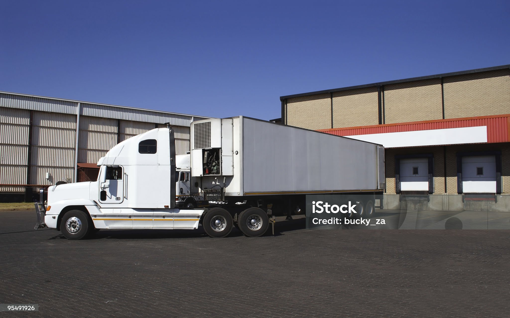

Home Government Business Technology Equipment Safety Fuel Logistics Autonomous Top100/Top50
Special Coverage

2025 TMC | Photo Gallery
Complete Coverage of American Trucking Associations Technology & Maintenance Council annual meeting March 10-13, in Nashville, Tennesse
Wabash to Quadraple Size of Taas Fleet
Mack Adds Allison Transmission to GuardDog Connect
TMC Chair Mihai to Focus on Mastering Tech and Soft Skills
TMC Celebrates Graduates of Trucking Leadership Class
TMC Names First Distinguished Service Provider Recipients
Top Story
Applied Intuition Team Up
on Software-Defined Trucks
International Motors parent company Traton Group will
vehicle software platforms with Mountain View, calif.-
headquartered software group Applied Intuition, the
companies said.
Legislation that would restrict the federal government from
permitting states to limit sales of vehicles with internal
combustion engines was recently introduced in the U.S. Senate
Yellow Creditors Push Plan to End Bankruptcy Case
Creditors of defunct trucking firm yellow Corp. will submit
their own plan in coming days on how to split up the company's
remaining $550 million of cash and end its bankruptcy case
CATL&Nio Sign $346M Deal to Expand Battery-Grid
The world's largest battery manufacturer, CATL, has agreed
to invest up to $346 million in building out a battery
network across China in collaboration with EV maker NIO
Trending News
Truck Tonnage Rises 3% in February, Signaling Recovery
The freight market experienced a 3% sequential tonnage increase in
February as well as its second straight year-over-year gain,
furthering optimism it is emerging from recession.
Economy
Yellow Creditors Push Plan to End bankrupty case
Luminar Stock Jumps as Viral Video Backs Its Tech Over tesla
Daimer Truck Eyes Reset as Steady DTNA Awaits OTR Rebound
BYD Unveils Battery System That Charges EV in Five Minutes
Low-Rolling-Resistance Tires Gain Traction in Trucking
Volswagen Raises $393M in Sale of Traton Truck Unit Stake
Shipping Group Says Trump Port Fee plan Will Hurt Economy
Torc Partners With Flex, Nvidia on Autonomous Trucks
Stellantis Eyes Cheaper Ram 1500 for US Comeback
Siemens to Cut 6,000 Jobs, Some in Ev Charging Business